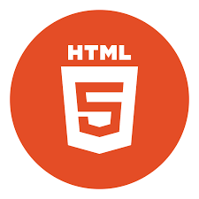

Adobe Photoshop

Adobe Illustrator

Adobe XD

HTML & CSS

C++

Above are a couple of skills I have gained over the past couple of years through my graphic design classes. I was lucky enough to have access to all of Creative Cloud and pick up new skills. In Photoshop, I gained a lot of experience with editing photos, creating timeframe animations, and adding exterior elements to original tabloids. Through Illustrator, I created many unique poster designs, logo mockups, and expressive text. In XD, I was able to create mobile app mockups that users can click through using their phone or laptop.
In addition to my graphic design skills, I am also strong at Java, C++, and Python programming. I have coded some simple games as well as a calculating machine. Through my web development class that I am currently in, I have become strong at writing html, css, and javascript. I am very interested in UI/UX design which is why my web development class has been very helpful. Creating different websites have helped me meld my programming and design skills together. Ever since I was young, I have always been passionate about design, whether it be material fashion or interior design or doing makeup. Graphic design is a perfect in between for me of technology and design.
Here is my resume! Please check out my LinkedIn and my other websites through my contact page. I would love to get in touch and learn more about YOU too.